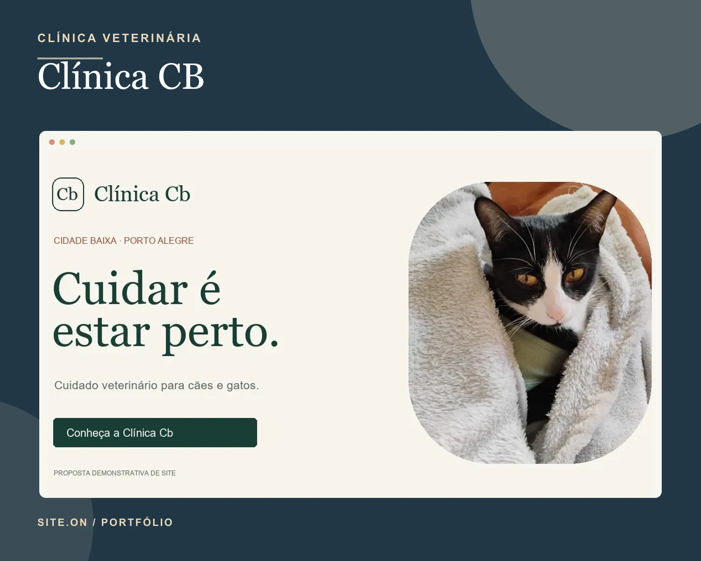
Saúde animalClínica CB
Apresentação de serviços, horários e contato para uma clínica veterinária.
Proposta demonstrativaSite.on · por Gustavo Dias
Crio sites para pequenos negócios mostrarem o que fazem e receberem novos contatos com clareza.
projetos com link público
Conceitos e propostas estão identificados. Sem depoimentos inventados.
Projetos por nicho
Veja os sites, entenda o que cada projeto apresenta e abra a versão publicada.
12 projetos em 6 nichos.
Para clínicas que precisam apresentar serviços, horários e formas de contato.

Saúde animalApresentação de serviços, horários e contato para uma clínica veterinária.
Proposta demonstrativa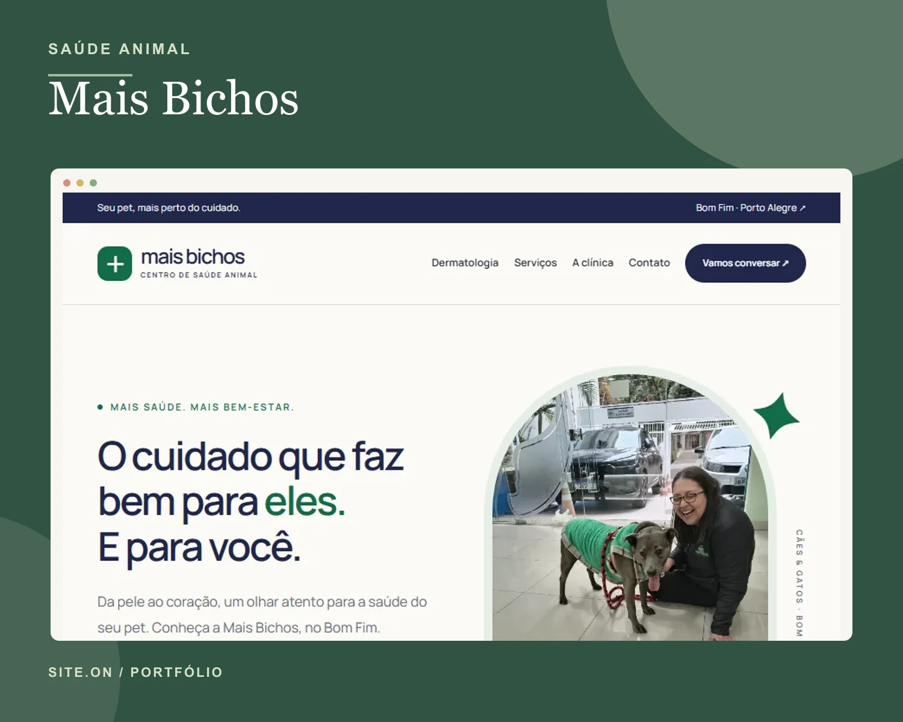
Saúde animalSite para organizar especialidades, exames, serviços e contatos da clínica.
Proposta demonstrativaPara salões e barbearias mostrarem serviços e facilitarem os agendamentos.
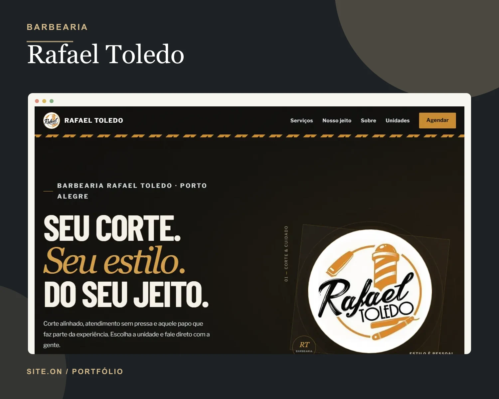
BarbeariaServiços, unidades e caminho de contato para solicitar um agendamento.
Site publicado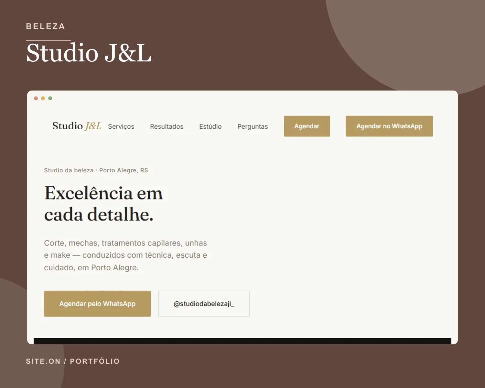
Salão de beleza · Porto AlegreApresentação de corte, tratamentos capilares, unhas e maquiagem.
Site publicado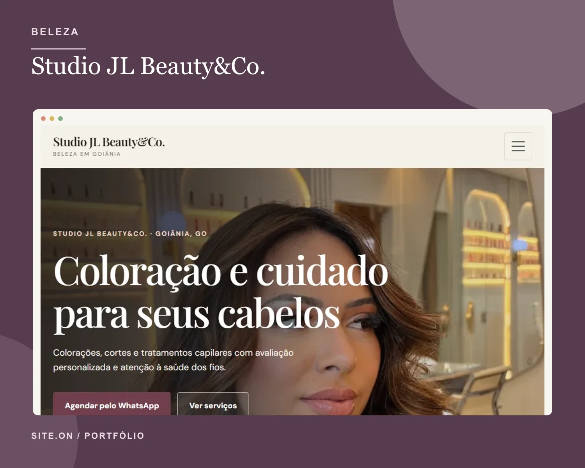
Cabelos e beleza · GoiâniaServiços do estúdio e caminho direto para agendar pelo WhatsApp.
Site publicadoPara brechós e marcas independentes apresentarem peças e coleções.
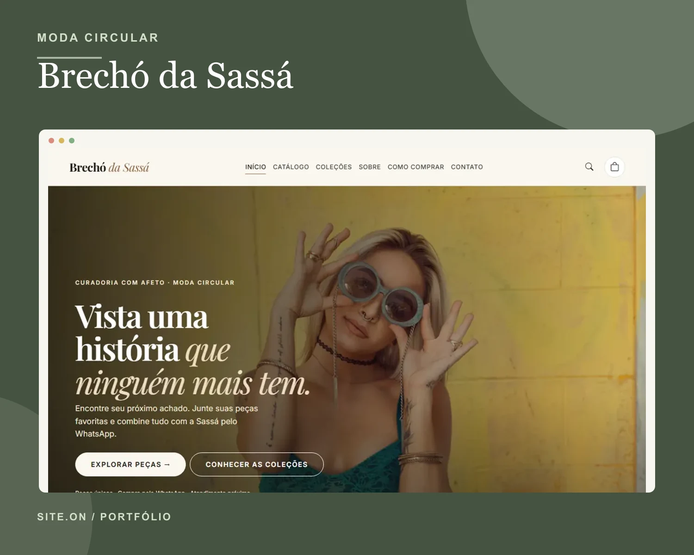
Moda circularVitrine de peças, categorias e contato para consultar disponibilidade.
Site publicado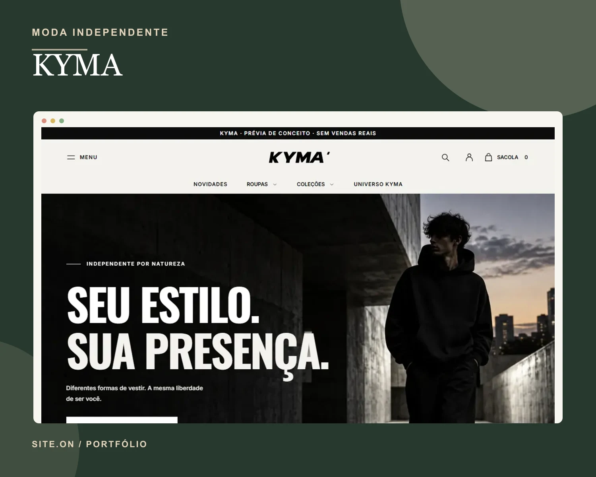
Moda independenteExperiência de marca para uma loja de moda independente.
Conceito de marcaPara marcas de alimentos mostrarem produtos, cardápios e formas de pedir.
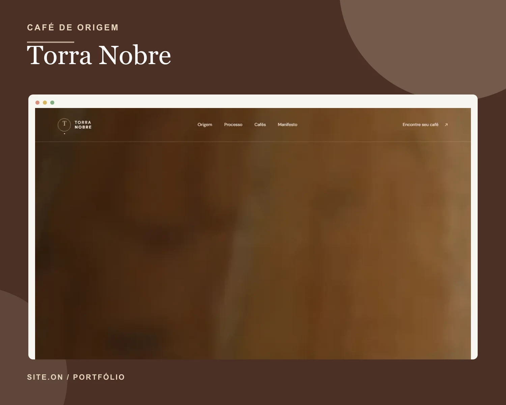
Café de origemApresentação conceitual de cafés, origem e processo de torra.
Conceito de marca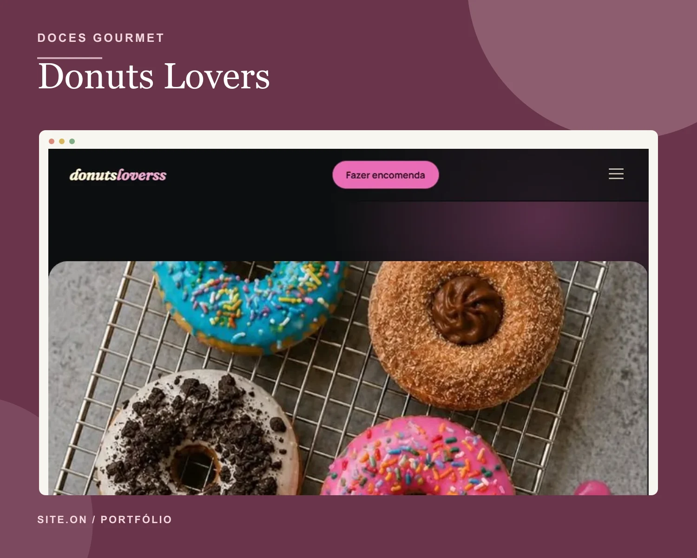
Mini donuts e docesLanding page conceitual para uma marca fictícia de mini donuts e doces.
Conceito de marcaPara profissionais explicarem seus formatos de atendimento e programas de treino.
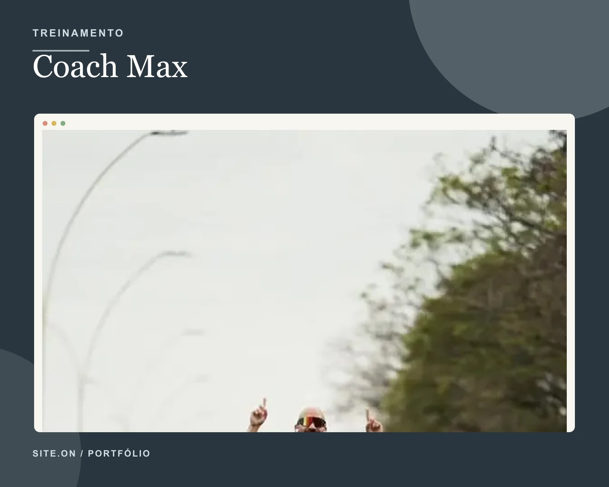
Consultoria e personalApresentação de consultoria online e treinamento presencial individualizado.
Site publicado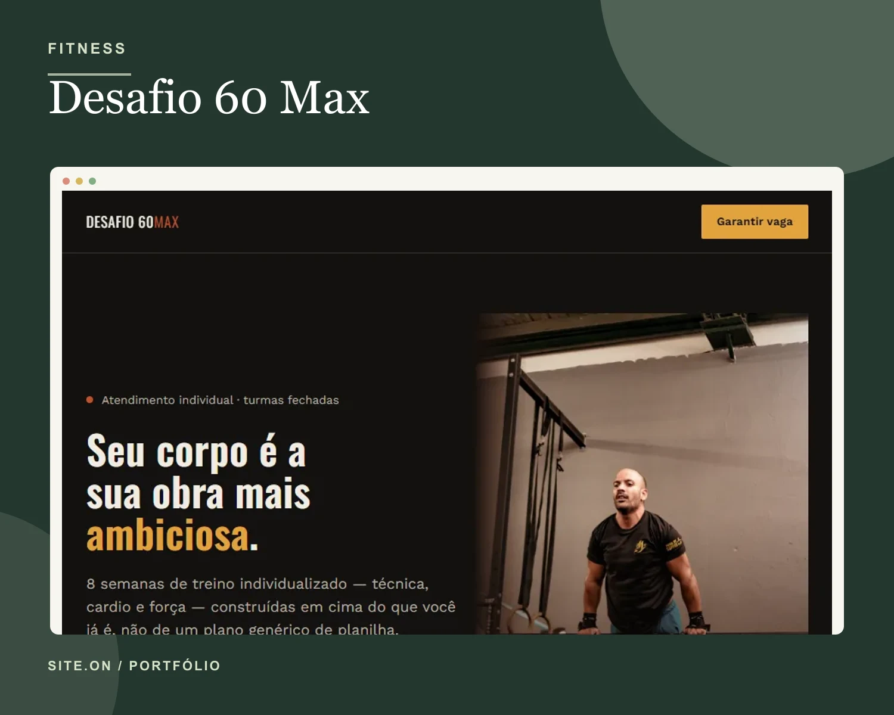
Treino individual · 8 semanasApresentação de um programa de oito semanas com treino individualizado.
Site publicadoPara fornecedores organizarem linhas de produtos e receberem pedidos de cotação.
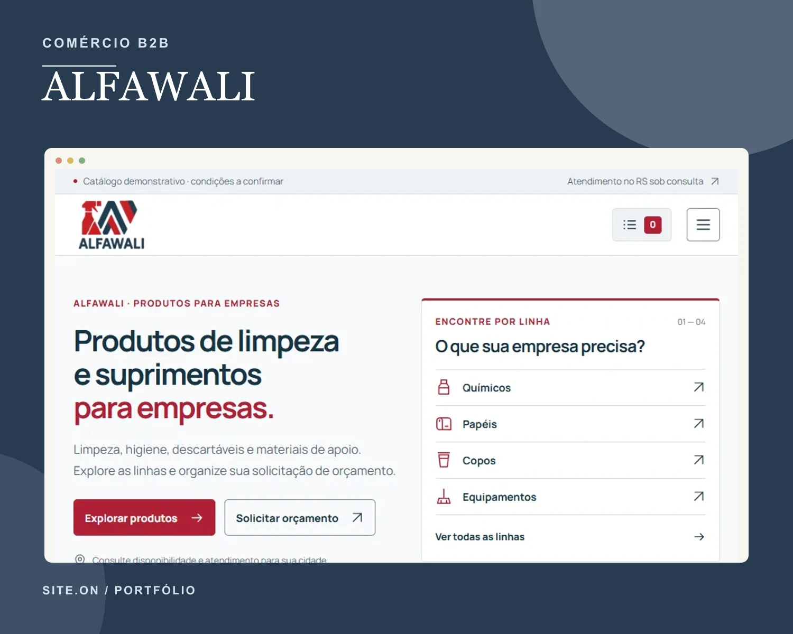
Suprimentos para empresasCatálogo demonstrativo de produtos e lista de cotação para fornecedores.
Proposta demonstrativa“Site publicado” identifica uma página pública. Não afirma que houve contratação. Conceitos e propostas estão marcados no próprio projeto.
O que posso fazer pelo seu negócio
Escolhemos juntos o formato que ajuda seus clientes a entender o que você oferece.
Conte sua história, mostre seus serviços e deixe o contato fácil de encontrar.
Explique uma oferta ou campanha e ajude a pessoa a dar o próximo passo.
Mostre seus produtos em uma ordem simples e facilite pedidos de informação.
Como funciona
A gente conversa com clareza e combina cada etapa antes de começar.
Você me conta sobre seu negócio e o que precisa mostrar.
Eu organizo o escopo e explico o investimento antes de desenvolver.
Revisamos o site juntos e combinamos a publicação.
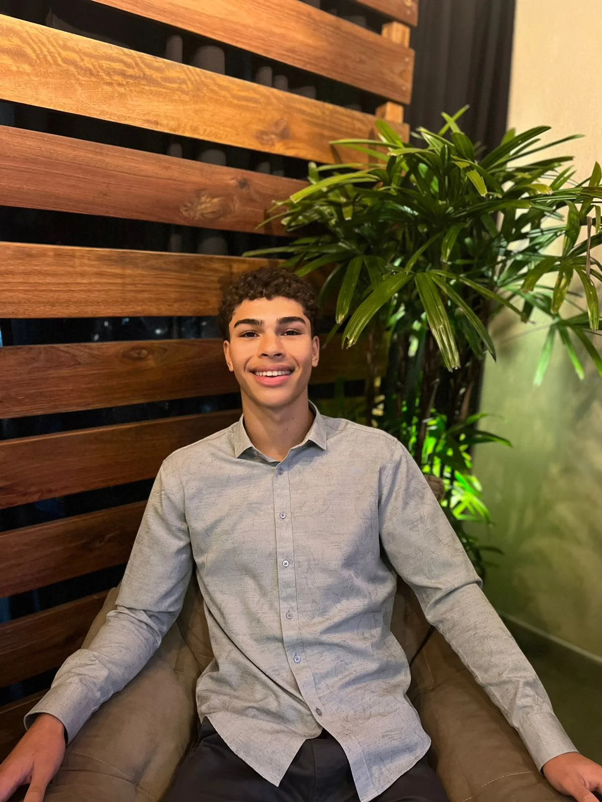
Quem vai criar seu site
Estou à frente da Site.on e acompanho cada projeto do primeiro papo à publicação.
Se tecnologia não é sua praia, tudo bem. Conversamos com calma e em linguagem simples.
Conhecer meu InstagramSeu próximo passo
Me conte o que você faz e o que gostaria de apresentar.
Chamar Gustavo no WhatsApp